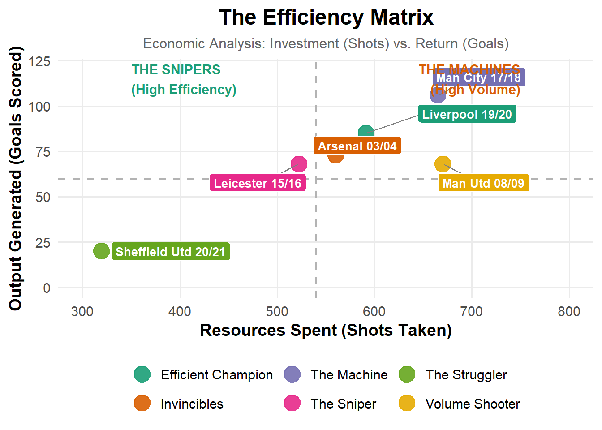
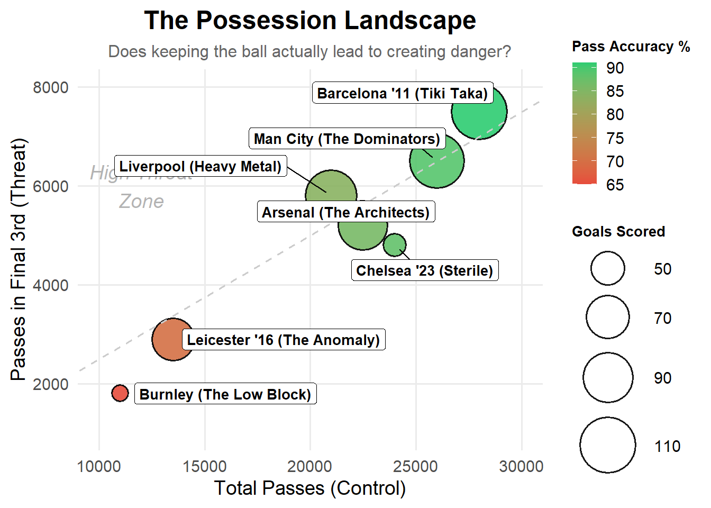

Data and the Beautiful Game
Football is a game of moments, but data helps us understand the patterns behind them. This project is dedicated to decoding the Premier League through the lens of analytics. By combining raw match data with clean, insightful visualizations, I aim to answer the biggest questions of the season: Who is truly overperforming? Which defenses are lucky? And what does the data really say about the teams we love?
Figure 1: The Efficiency Matrix. This graph analyzes the “business model” of winning. By treating shots as “Investment” (X-Axis) and goals as “Return” (Y-Axis), we see two distinct paths to the title. Most champions, like Manchester City (“The Machines”), win by overwhelming opponents with sheer volume—spending massive resources to guarantee goals. Leicester City (“The Snipers”) stands alone as an economic anomaly: they won the league with significantly lower investment, relying instead on elite precision to maximize every single opportunity. They didn’t outspend the market; they outsmarted it.

Most top teams, like Man City and Barcelona, cluster in the top-right, using massive possession to suffocate opponents. But look at Leicester City alone in the bottom-left: they are the ultimate anomaly. Despite having the low possession and pass accuracy (shown in orange), their goal tally is massive. They didn’t waste time passing sideways; they bypassed the midfield entirely, proving that in 2016, speed killed possession.
On the right, Man City demonstrates the High Press, engaging opponents deep in their own half to suffocate attacks before they begin. In contrast, the center panel reveals the anomaly of Leicester City’s 2016 title run: a disciplined Low Block. Unlike the League Average, which shows a scattered and porous defensive shape, Leicester’s structure is incredibly compact and narrow. They invited pressure by sitting deep (indicated by the lower dashed engagement line) but controlled the dangerous central spaces with surgical precision, forcing opponents wide and neutralizing threats.